- ホーム
- 医院について
「かすが歯科」の医院情報をご確認ください
福岡県春日市の歯医者「かすが歯科」は、常に患者様の立場に立つことを忘れず、日々真摯に診療にあたる歯科医院です。こちらでは、医院概要や診療時間、アクセスなどをご紹介します。お口のお悩みは、お気軽に当院までご相談ください。
医院概要
| 医院名 | かすが歯科 |
|---|---|
| 院長 | 稲永 龍一郎 |
| 所在地 | 〒816-0813 福岡県春日市惣利5丁目13-2 |
| 電話番号 | 092-595-1600 |
| 診療内容 | 一般歯科・小児歯科・歯科口腔外科、予防歯科、インプラント・小児矯正・成人矯正・予防歯科・咬み合わせ治療 |
| 休診日 | 日曜・祝日・木曜 |
| 駐車場 | 11台 |
診療時間
平 日 9：00～12：30 14：00～18：00
※最終受付 17：30
土曜日 8：30～12：00 12：30～16：00
※最終受付 15：30
※表は左右にスクロールして確認することができます。
| 月 | 火 | 水 | 水 | 金 | 土 | |
|---|---|---|---|---|---|---|
| 9：00～12：30 | ○ | ○ | ○ | - | ○ | △ |
| 14：00～18：00 | ○ | ○ | ○ | - | ○ | △ |
△土曜日 8：30～12：00 / 12：30～16：00
※受付終了は診療時間の30分前まで。
※祝日のある週の木曜日は、診療日になることがあります。
院内紹介
| 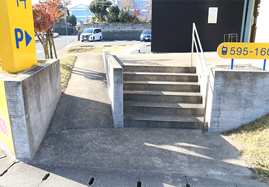 | 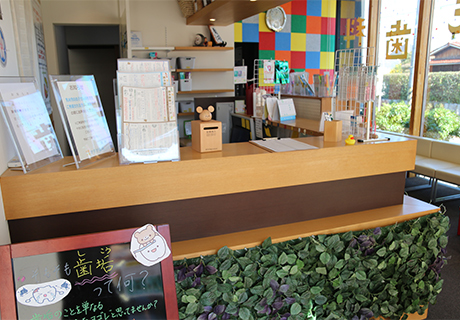 |
|---|---|
入口 医院入口は広く段差もありませんので、足の不自由な方やお子様にも優しいつくりになっています。 |
受付 スタッフ一同、笑顔で皆様をお迎えしますので、お困りごとがありましら、何でも気軽にお声がけください。 |
| 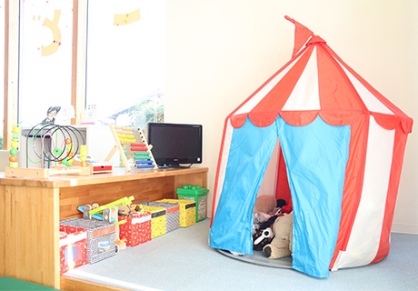 | 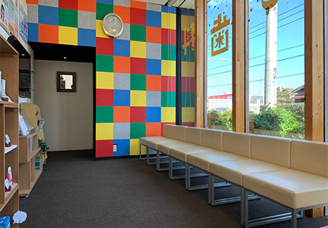 |
キッズコーナー お子さんに楽しい時間をお過ごしいただくためにキッズコーナーを設置しています。お子さん連れの方も安心して診療を受けていただけます。 |
待合室 診療までの待ち時間やお会計の準備をしている間、患者様にリラックスしてお待ちいただける環境づくりをしています。 |
| 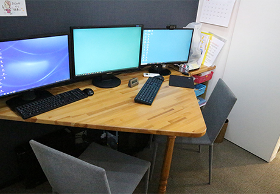 | 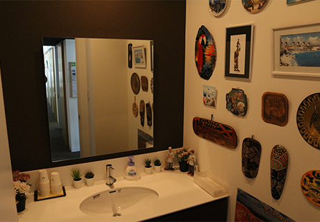 |
カウンセリングルーム 安心、安全に受診していただくため、積極的にカウンセリングルームを活用しています。丁寧なカウンセリングを心がけておりますので、何でも気軽にお話しください。 |
ブラッシング室 当院ではブラッシング室を完備しています。診療前のブラッシング、診療後のお化粧直しなど、ご自由にお使いください。 |
| 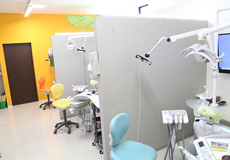 | 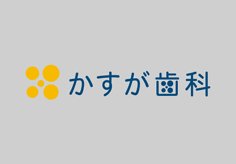 |
診療室（半個室） 明るく開放的な空間になっており、リラックスして診療を受けていただけます。診療室はすべて半個室なので、他人の視線が気になることはありません。 |
特診室（完全個室） おもに予防・メンテナンス、インプラント手術など少し時間のかかる治療を行います。治療を終えられた後には、こちらの個室でメンテナンスをお受けいただけます。 |
| 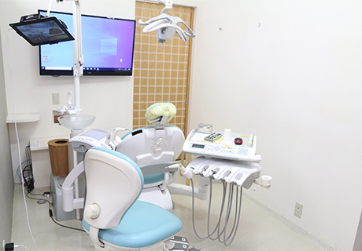 | |
診療ユニット 新しいタイプのALL LEDタイプのユニットです。すべてのライトがLEDとなっております。ユニット正面の画面にレントゲン画像や当院からの情報提供をさせていただきます。 |
基本セット 患者様ごとの基本セット（ピンセットやミラーなど）は個別に滅菌パックしたものを準備しています。 |
| 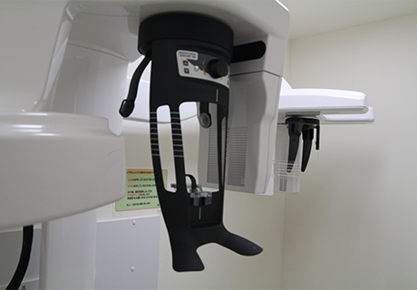 | 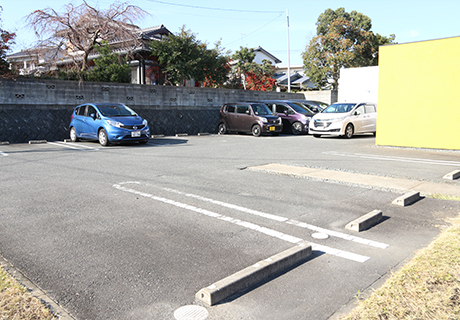 |
レントゲン室 安心・安全なデジタルレントゲン機器を導入しています。より精密かつ正確にお口の中について把握できるので、治療の精度が上がります。 |
駐車場 駐車場は11台分をご用意しております。1台1台のスペースもゆったり確保しております。 |
外観 院長の同級生である薬院設計総研さんにお願いしました。医院内外に少々設計者のこだわりが散りばめられています。 |
アクセス
ザ・モール春日すぐそば 山ぶき色の看板が目印です。
場所が分からない方はお気軽にお電話ください。